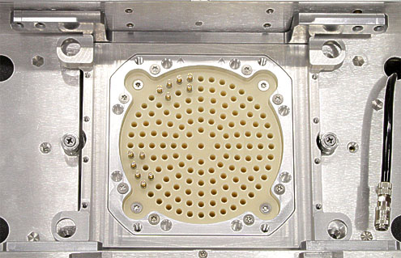
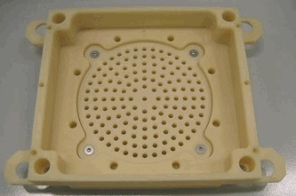
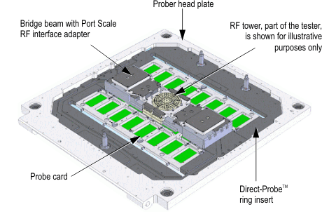
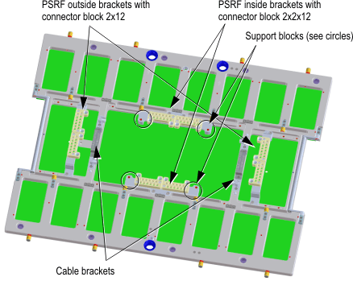
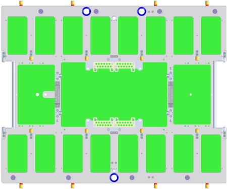
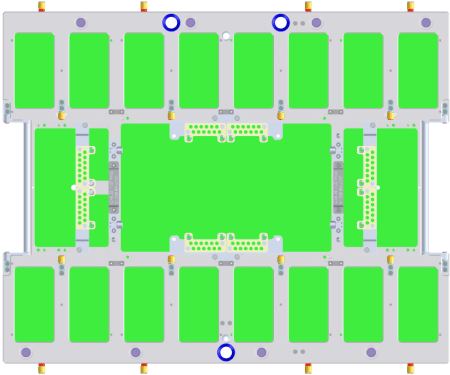

Direct-Probe PSRF probe card specifications
| Supported V93000 systems : Smart Scale (SmarTest 7), Pin Scale |
Note You need the RF interface N2492A. The RF interface N2392A is not
compatible to Direct-Probe™.
- RF interface N2492A - Supported:

- RF interface N2392A - Not supported:

- For general Direct-Probe™ probe card specifications, see Direct-Probe probe card specifications.
- For Direct-Probe™ PSRF bridge beam specifications,
see Direct-Probe PSRF tower connection specifications.Note The drawings in this guide serve as conceptual descriptions only and may differ from the latest original design drawings. For the original drawings see Direct-Probe probe card layout information and Direct-Probe stiffener.
Components

Description |
Part number |
|---|---|
Large DUT board stiffener for RF, digital, and mixed signal |
|
PSRF1) inside brackets with connector block 2x2x12 and support blocks |
N2498A-101 |
PSRF1) outside brackets with connector block 2x12 and support blocks |
N2498A-102 |
PSRF1) DUT board SMP connector |
N2394A-106 |

Position of the guide pins for RF appliances

For details, see Direct-Probe stiffener details.
Examples
48 RF Ports - using center connector locations

96 RF Ports - using inner and outer connector locations

Functional changes
- Introduced in SmarTest 6.5.4
- SmarTest 7.1.0: Added support blocks
1) PSRF means Port Scale RF